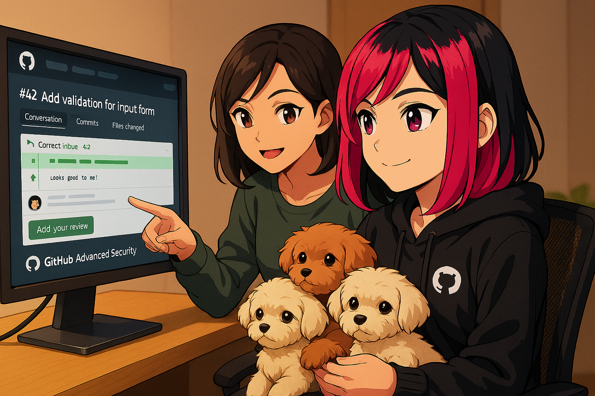

AI Pair Programming: Prompts, Refactoring, and Docs
ByteStrike Levels Up
ByteStrike's decoder works, but now the real work begins. The mission has grown:
- Need to handle multiple secret formats
- Code needs to be production-ready (error handling, logging, type hints)
- The decoder will be used by others on The League, so docs are critical
- Time is running out
This is where pair programming shines. You're no longer just asking for code; you're collaborating with Copilot to solve real problems.
From Suggestions to Partnership
Now that you understand how Copilot thinks, it's time to become an expert pair programmer with it. True pair programming with Copilot goes beyond letting it finish your lines; it's about collaborating to write better, more tested, and better-documented code. You guide, Copilot generates, and together you create something neither would produce alone.
This chapter focuses on three key real-world tasks where Copilot excels: extending and refactoring existing code, generating documentation, and writing tests. You'll learn effective prompting strategies that make Copilot your most productive pair programmer.
Learning Objectives
- Write effective prompts for clear, secure, idiomatic code
- Use Copilot for refactoring legacy code safely and efficiently
- Generate documentation (docstrings, XML comments, README sections)
- Guide Copilot through complex instructions and multi-step logic
- Write unit tests alongside code generation
Effective Prompting for Code Generation
The quality of your prompts determines the quality of Copilot's suggestions. Here are the key principles:
1. Be Specific and Concrete
Weak prompt:
# Add a function that handles users
def manage_users():Strong prompt:
# Fetch all active users from the database, filter by last login date (within 30 days),
# sort by user name, and return as a list of user objects
def get_recently_active_users(days: int = 30) -> List[User]:2. Specify Expected Behavior and Edge Cases
Example:
# Parse a comma-separated list of integers.
# Handle whitespace around numbers; skip empty entries.
# Return a list of integers. Raise ValueError if a value is not a valid integer.
def parse_int_list(csv_string: str) -> List[int]:3. Indicate Language-Specific Idioms
# Using list comprehension, create a set of unique email domains from the users list
def extract_email_domains(users: List[User]) -> Set[str]:// Using LINQ, extract email domains as a HashSet, then order by frequency
public HashSet ExtractEmailDomains(List users)
{ // Using array methods, extract email domains and keep them unique
function extractEmailDomains(users) {
// Copilot will likely suggest map + Set to dedupe domains
}
4. Reference Standards or Patterns
# Implement password validation following NIST guidelines:
# Minimum 12 characters, avoid common patterns, no hardcoded hints.
# Return (is_valid: bool, error_message: str)
def validate_password(password: str) -> Tuple[bool, str]:Refactoring with Copilot
Refactoring is one of Copilot's superpowers. By providing clear instructions, you can safely modernize legacy code, improve readability, and enhance performance.
Step-by-Step Refactoring
Original code (messy):
def process_data(x):
result = []
i = 0
while i < len(x):
if x[i] % 2 == 0:
result.append(x[i] * 2)
i += 1
return resultRefactoring prompt:
# Refactor to use list comprehension, add type hints, and make the logic clearer
def process_data(x: List[int]) -> List[int]:
# Filter even numbers and double them
Copilot will suggest:
def process_data(x: List[int]) -> List[int]:
# Filter even numbers and double them
return [n * 2 for n in x if n % 2 == 0]Adding Error Handling
# Add error handling and input validation.
# Check for None and non-list inputs. Log errors.
def process_data(x: List[int]) -> Optional[List[int]]:
if x is None:
logging.error("Input is None")
return None
# Copilot continues with safe processing logicPerformance Improvements
# Optimize this function to use a single pass over the data.
# Use generators if appropriate.
def categorize_users(users: List[User]) -> Dict[str, List[User]]:
# Categorize users by role, returning each role's users
Documentation Generation
Copilot is excellent at generating documentation. Use it to create docstrings, XML comments, README sections, and even API documentation.
Docstrings
Your code:
def calculate_age(birth_year: int) -> int:Trigger Copilot for docstring (usually auto-suggests):
def calculate_age(birth_year: int) -> int:
"""
# Copilot suggests:
Calculate the age of a person given their birth year.
Args:
birth_year: The year the person was born (e.g., 1990)
Returns:
The calculated age in years
Raises:
ValueError: If birth_year is in the future
"""
from datetime import datetime
current_year = datetime.now().year
if birth_year > current_year:
raise ValueError(f"Birth year {birth_year} cannot be in the future")
return current_year - birth_yearRequesting Documentation: If Copilot doesn't auto-suggest, ask directly:
# Add comprehensive docstring with examples
def merge_sorted_lists(list1: List[int], list2: List[int]) -> List[int]:XML Comments
///
/// Copilot will auto-complete this based on your method signature:
/// Validates whether an email address follows standard RFC 5322 rules.
///
/// The email address to validate
/// True if valid, false otherwise
public bool ValidateEmail(string email)
{Requesting Documentation: Ask Copilot to generate comprehensive documentation:
/// Add comprehensive XML documentation with examples and exceptions
public List MergeAndSort(List list1, List list2) where T : IComparable
{ JSDoc
/**
* Calculate the age of a person given their birth year.
* @param {number} birthYear The year the person was born (e.g., 1990)
* @returns {number} Calculated age in years
* @throws {RangeError} If birthYear is in the future
*/
function calculateAge(birthYear) {
// Copilot will complete the implementation
}
Requesting Documentation: Ask Copilot to generate comprehensive JSDoc with examples:
// Add comprehensive JSDoc with examples
function mergeSortedLists(list1, list2) {
// Copilot will propose docs and edge cases
}
Guided Code Generation: Multi-Step Logic
For complex tasks, break them into smaller steps in comments. Copilot will follow your outlined structure.
Example: Building an API Endpoint
@app.route('/api/users/', methods=['GET'])
def get_user(user_id):
# 1. Validate that user_id is a positive integer
# 2. Query the database for the user
# 3. If not found, return a 404 error
# 4. Return the user as JSON with appropriate headers
# Copilot will fill in each step based on your framework context Example: Data Processing Pipeline (C#)
public async Task> ProcessUserDataAsync(List rawData)
{
// 1. Validate input (check for null, empty list)
// 2. Filter out invalid records
// 3. Transform each valid record
// 4. Sort by timestamp
// 5. Return the result
// Copilot will implement each step with async/await where appropriate
} Writing Tests with Copilot
Copilot excels at generating unit tests. After writing a function, prompt Copilot to create comprehensive tests.
Using pytest
def validate_credit_card(card_number: str) -> bool:
# Validates credit card number format and checksum
# Returns True if valid, False otherwise
if not card_number or len(card_number) < 13 or len(card_number) > 19:
return False
# Add checksum validation here
# Prompt for tests:
# Write comprehensive pytest tests for validate_credit_card,
# including valid numbers, invalid formats, boundary cases
import pytest
def test_validate_credit_card_valid_number():
assert validate_credit_card("4532015112830366") == True
def test_validate_credit_card_invalid_length():
assert validate_credit_card("123") == False
# ... more tests followUsing xUnit
public class UserServiceTests
{
private UserService _userService;
public UserServiceTests()
{
_userService = new UserService();
}
// Write xUnit tests for UserService.ValidateEmail,
// including valid addresses, invalid formats, edge cases
[Fact]
public void ValidateEmail_WithValidEmail_ReturnsTrue()
{
// Arrange & Act & Assert: Copilot will complete
}
}Using Jest
function validateCreditCard(cardNumber) {
// Implementation here
return true;
}
// Prompt for tests:
// Write comprehensive Jest tests for validateCreditCard,
// including valid numbers, invalid formats, and boundary cases.
describe('validateCreditCard', () => {
test('accepts a valid number', () => {
expect(validateCreditCard('4532015112830366')).toBe(true);
});
test('rejects too-short numbers', () => {
expect(validateCreditCard('123')).toBe(false);
});
});
Lab 3: ByteStrike's Pair Programming Sprint
Your mission is to take ByteStrike's decoder and make it production-ready.
Tasks:
- Feature Request: Add support for nested secrets (e.g.,
{* outer {* inner *} outer *}). Prompt Copilot with a clear comment describing the requirement, then iterate on the solution. - Error Handling: The remote server is unreliable. Ask Copilot to add retry logic, timeout handling, and logging. Use a multi-line prompt to guide it.
- Tests: Write unit tests for the decoder. Start with a simple test structure and let Copilot suggest the rest. Then refine it together.
- Documentation: Generate comprehensive docstrings (Python) or XML comments (C#) that explain the decoder's behavior, parameters, and error conditions.
- Code Review: Read the final code together with Copilot. Ask: "Are there security or performance issues?" and iterate on improvements.
What you'll learn: Pair programming isn't about Copilot doing all the work; it's about you directing, and Copilot accelerating. By the end, you have a decoder that ByteStrike can actually ship.
Exercise 1: Refactor the Blueprint Decoder
The mission briefing is in — ByteStrike's original decoder works, but it's a monolithic blob. One function does everything: reads the file, extracts secrets, categorises them, and prints a report. That makes it impossible to test or extend independently. Your job is to use Copilot to split it into focused, single-responsibility helpers.
Open blueprint_decoder.py. The current implementation looks like this:
def decode_blueprint(filename):
try:
with open(filename, 'r') as f:
content = f.read()
import re
secrets = re.findall(r'\{\* (.*?) \*\}', content)
print("=" * 40)
print("DECODED SECRETS REPORT")
print("=" * 40)
print(f"Found {len(secrets)} secret(s):\n")
for i, s in enumerate(secrets, 1):
print(f"{i}. {s}")
print("=" * 40)
cats = {}
for s in secrets:
key = s.split(":")[0].strip() if ":" in s else "UNKNOWN"
cats[key] = cats.get(key, 0) + 1
return cats
except FileNotFoundError:
print(f"Error: '{filename}' not found.")
return {}Task:
- Open
blueprint_decoder.pyand paste in the monolithic function above. - Select the entire function (click the first line, then Shift+click the last line).
- Open Inline Chat with Ctrl+I (or Cmd+I on Mac).
- Type this prompt and press Enter:
Refactor this into three separate helper functions: 1. read_blueprint(filename) -> str - reads and returns file content 2. extract_secrets(content: str) -> List[str] - uses regex to find all {* ... *} 3. categorize_secrets(secrets: List[str]) -> Dict[str, int] - counts by prefix before ":" Keep a decode_blueprint_safe orchestrator that calls all three. - Review Copilot's diff, then click Keep (the ✓ button) to apply the changes.
Open LeagueHQ.cs. The current implementation looks like this:
public static Dictionary<string, int> DecodeBlueprint(string filename)
{
try
{
var content = System.IO.File.ReadAllText(filename);
var pattern = new System.Text.RegularExpressions.Regex(@"\{\* (.*?) \*\}");
var secrets = pattern.Matches(content).Select(m => m.Groups[1].Value).ToList();
Console.WriteLine(new string('=', 40));
Console.WriteLine("DECODED SECRETS REPORT");
Console.WriteLine(new string('=', 40));
Console.WriteLine($"Found {secrets.Count} secret(s):\n");
for (int i = 0; i < secrets.Count; i++)
Console.WriteLine($"{i + 1}. {secrets[i]}");
Console.WriteLine(new string('=', 40));
var cats = new Dictionary<string, int>();
foreach (var s in secrets)
{
var key = s.Contains(':') ? s.Split(':')[0].Trim() : "UNKNOWN";
cats[key] = cats.GetValueOrDefault(key, 0) + 1;
}
return cats;
}
catch (FileNotFoundException)
{
Console.WriteLine($"Error: '{filename}' not found.");
return new Dictionary<string, int>();
}
}Task:
- Open
LeagueHQ.csand paste in the monolithic method above. - Select the entire method from the opening signature to the closing
}. - Open Inline Chat with Ctrl+I (or Cmd+I on Mac).
- Type this prompt and press Enter:
Refactor this into three static helper methods: 1. ReadBlueprint(string filename) -> string - file I/O only 2. ExtractSecrets(string content) -> List<string> - regex parsing only 3. CategorizeSecrets(List<string> secrets) -> Dictionary<string, int> - categorization only Keep a DecodeBlueprintSafe orchestrator that calls all three. - Review Copilot's diff, then click Keep (the ✓ button) to apply the changes.
Open leagueMission.js. The current implementation looks like this:
function decodeBlueprint(filename) {
try {
const content = require('fs').readFileSync(filename, 'utf8');
const secrets = [...content.matchAll(/\{\* (.*?) \*\}/g)].map(m => m[1]);
console.log('='.repeat(40));
console.log('DECODED SECRETS REPORT');
console.log('='.repeat(40));
console.log(`Found ${secrets.length} secret(s):\n`);
secrets.forEach((s, i) => console.log(`${i + 1}. ${s}`));
console.log('='.repeat(40));
const cats = {};
for (const s of secrets) {
const key = s.includes(':') ? s.split(':')[0].trim() : 'UNKNOWN';
cats[key] = (cats[key] ?? 0) + 1;
}
return cats;
} catch (err) {
console.log(`Error: '${filename}' not found.`);
return {};
}
}
Task:
- Open
leagueMission.jsand paste in the monolithic function above. - Select the entire function from
function decodeBlueprintto its closing}. - Open Inline Chat with Ctrl+I (or Cmd+I on Mac).
- Type this prompt and press Enter:
Refactor this into three helper functions: 1. readBlueprint(filename): string - file I/O only 2. extractSecrets(content): string[] - regex parsing only 3. categorizeSecrets(secrets): Record<string, number> - counts by prefix before ":" Keep a decodeBlueprintSafe orchestrator that calls all three and handles errors. - Review Copilot's diff, then click Keep (the ✓ button) to apply the changes.
Exercise 2: Generate Comprehensive Tests
Create a new file test_blueprint_decoder.py. Open Copilot Chat (Ctrl+I / Cmd+I on Mac) and send this prompt:
Using pytest-playwright, write tests for extract_secrets() and categorize_secrets() in blueprint_decoder.py.
Cover: happy path, no matches, multiple secrets, categorization by prefix, and no-colon edge case.
Install with: pip install pytest-playwrightCheck that the generated tests cover:
- Content with multiple
{* *}secrets - Content with no markers (empty result)
- Secrets with a colon prefix (e.g.,
AGENT_CODENAME: SHADOWMIND) - Secrets without a colon (categorised as
UNKNOWN) - An empty list passed to
categorize_secrets
Run with: pytest test_blueprint_decoder.py -v
Create a new file BlueprintDecoderTests.cs. Open Copilot Chat (Ctrl+I / Cmd+I on Mac) and send this prompt:
Using Microsoft.Playwright.NUnit, write tests for BlueprintDecoder.ExtractSecrets and CategorizeSecrets.
Cover: happy path, no matches, empty input, and categorization edge cases (no colon).
Install with: dotnet add package Microsoft.Playwright.NUnitCheck that the generated tests cover:
- Content with multiple
{* *}secrets - Content with no matches (empty list result)
- Secrets with a colon prefix grouped correctly
- Secrets without a colon (should be marked
"UNKNOWN") - An empty list passed to
CategorizeSecrets
Run with: dotnet test
Create a new file blueprint_decoder.spec.ts. Open Copilot Chat (Ctrl+I / Cmd+I on Mac) and send this prompt:
Using @playwright/test, write tests for extractSecrets() and categorizeSecrets() in leagueMission.js.
Cover: happy path, no matches, empty string, secrets with and without a colon prefix.
Install with: npm install -D @playwright/testCheck that the generated tests cover:
- Content with multiple
{* *}secrets - Content with no markers (empty array result)
- Secrets with a colon prefix (e.g.,
AGENT_CODENAME: SHADOWMIND) - Secrets without a colon (categorised as
UNKNOWN) - An empty array passed to
categorizeSecrets
Run with: npx playwright test blueprint_decoder.spec.ts
Exercise 3: Documentation Generation
ByteStrike's helpers are now testable — but a new agent needs to use them without reading the implementation. Your mission: ask Copilot to write comprehensive documentation for the helper functions.
Place your cursor inside extract_secrets and type this comment to trigger Copilot:
# Write a detailed docstring covering: purpose, Args, Returns, Raises, and an ExampleDo the same for categorize_secrets and decode_blueprint_safe. Check that each docstring includes:
- A clear one-line summary
Args:section with type and description for each parameterReturns:section describing what is returnedExample:block with runnable sample input and output
Place your cursor above ExtractSecrets and type this comment to trigger Copilot:
/// Add comprehensive XML documentation: summary, param, returns, and an exampleDo the same for CategorizeSecrets and DecodeBlueprintSafe. Check that each XML doc block includes:
<summary>with a clear description<param>for each parameter<returns>describing the return value<example>with a code snippet
Place your cursor above extractSecrets and type this comment to trigger Copilot:
/**
* Add comprehensive JSDoc: description, @param, @returns, and @example
*/Do the same for categorizeSecrets and decodeBlueprintSafe. Check that each JSDoc block includes:
- A clear description of what the function does
@paramwith type and description for each argument@returnswith the return type and description@exampleshowing a real call with its output
Reflection Questions
- How much faster were you able to refactor with Copilot's assistance?
- Did the generated tests catch bugs you might have missed?
- How did detailed prompts compare to vague ones?
- Which aspect of pair programming (refactoring, docs, tests) felt most natural with Copilot?
Best Practices Summary
- Be explicit: More detail in your prompts = better suggestions
- Add context: Type hints, existing patterns, and framework knowledge matter
- Iterate: If the first suggestion isn't right, refine your comment and try again
- Test aggressively: Even well-prompted code needs testing
- Keep refactoring focused: One change at a time is easier for both you and Copilot to reason about
Conclusion
Copilot becomes a truly effective pair programmer when you master the art of prompting. Whether you're refactoring legacy code, generating documentation, or writing tests, clear instructions and good context are your most valuable tools. In the next chapter, we'll explore the differences between traditional Copilot completions, Copilot Chat, and the newer Agent Mode, each suited to different tasks.